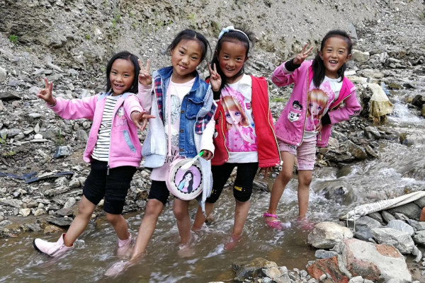

400-260-0852
400-260-0852
|
农村孩子的真实需要

自改革开放以来，随着社会政治经济的和城市化进程的快速发展，农村建设普遍处于相对落后状态。尤其是偏远地区农村教育远落后于城市的发展。 而随着越来越多的青壮年农民走入城市，在广大农村也随之产生了一个特殊的未成年人群体——农村留守儿童。根据统计,目前中国14周岁以下农村留守儿童现已超过4000万人。 当前无论是国家还是其他社会各界人士，都对农村教育、农村孩子尤其是农村留守儿童给予了极大的关注和支持。但是大家在急于帮助他们的时候是否认真思考过一个问题“农村孩子在成长过程中的真实需要？” 那么到底什么才是当前农村孩子的真实需要呢？为此我们在桥畔计划的支持下，专门邀请了国内一些教育公益机构代表，在天使支教2013年秋季支教志愿者培训期间进行了一次专题研讨。 在短短几天的讨论中，大家提出了各自的见解。比如：尊严、自立、归属、健康的自然环境、公平去追求的机会、有追求的老师、老师真实的情感、权威、真善美、勇气、选择自己的生活方式的权利、情感和精神上的引导、责任意识的培养、更多关爱、信任、信仰、感恩、安全感、认同、自信、成就感、创作自己的东西、体会、体验…… 由于参与人员在从事农村教育方面的经验不足，所以最终并没有讨论出一个完整的结果 。但是大家还是形成一个基本共识，那就是:
“钱对农村孩子来说，绝对不是最需要的”
为什么会出现钱对农村孩子来说绝对不是最需要的？接下来我们将通过一些具体事例来进行说明。同时还将通与大家进一步到底那些内容才是农村孩子成长过程中真正的需要。 相关阅读 直接物质帮助好吗?--藏区儿童拦人要钱要物现象 说起农村孩子现在最需要什么，大家可能马上想到的就是钱，有钱就可以实现很多愿望。而很多人也基于这种观念，毫不犹豫地为农村孩子做了自认为应该做的，那就是给他们大量的金钱和物质资助。 的确，钱和物质确实能为贫困家庭的孩子解决一些眼前困难，但我们总以这种意识去帮助农村的孩子，长期发展的结果...... [ 更多详情 ] 相关阅读 直接物质帮助好吗?--山村小学孩子的变化 在位于湖南湘西的偏远的大山里，有很多不被外界了解的山村小学。梦创公益从2007年春季学期开始，一直持续在当地实施“天使支教”-乡村支教活动。每学期都会招募组织长期接力支教志愿者，为这些学校的学生提供常规教学和课后地陪伴服务。 随着乡村支教志愿者到来和时间的推移及媒体的宣传，外界对这些偏远学校逐渐有所了解。也不断有各种社会人士为学校提供各种支持，修建学校，配套教学设施，资助学生。随着这些资助的大量涌入，也逐渐打破了这些当初不被外界关注的山村小学...... [ 更多详情 ] 相关阅读 农村孩子的真实需要 ——“尊严” 我们所说的农村孩子真实需要，就是指农村孩子在成长过程中最重要、最关键的需求。 现在社会各界人士都对农村孩子，尤其是农村留守儿童给予了极大的关注和支持，但是大家在急于帮助他们的同时，并没有认真了解他们的感受和需要，都是按照自己的主观想象去做出行动。这期间很多做法不但没帮到他们，反而还出现对他们的成长造成严重的伤害。尤其是我们很多人忽视了一点，那就是给予受助人足够的尊重...... [ 更多详情 ] 相关阅读 农村孩子的真实需要 ——“自立” 当前各种社会力量都热衷于为农村孩子捐助各种现成的物质或金钱，这对农村孩子的成长是极其不利的，比如前面我们提到的各种学生个人物资的捐赠让学生养成了不劳而获的习惯。但另一方面一些不合适的校园配套建设，也对农村学生的成长带来极大的阻碍。下面我们将通过一些对比事例来探讨农村孩子的另一种需要。...... [ 更多详情 ] 相关阅读 "农村孩子的真实需要 ——“归属” nbsp; 在广西东兰县板烈小学从事多年留守儿童教育研究的卢安克(志愿者)发现一个现象：在物质快速的发展现代社会，留守儿童的父母去打工赚钱给自己的孩子建新房子。每到周末回家的时候，这些留守儿童就一或两个人住在一栋两到三层楼的房子。但房子里的生活如何？在以前的老房里大人给了每一样东西它固定的位置，而生活也从大人得到了有规律的节奏。但现在...... [ 更多详情 ] 相关阅读 农村孩子的真实需要 ——偏远地区乡村教师现状 农村孩子最需要的能够有一个值得信任的权威，来帮助他们建立属于自己的归属。当大部分农村孩子因为父母外出，在成为留守儿童时，这个权威就是长期在他们身边的乡村教师。 而当前农村的乡村教师是什么情况呢？...... [ 更多详情 ] |
© 2013-2019 zrzy.com 版权所有 ICP证：京ICP备14000186号-10
 京公网安备11010102002019 建议使用1024*768以上分辨率浏览
京公网安备11010102002019 建议使用1024*768以上分辨率浏览
互联网违法和不良信息举报中心:0571-81683755 blxx@list.alibaba-inc.com